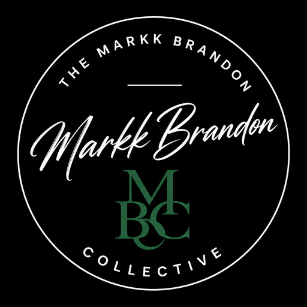
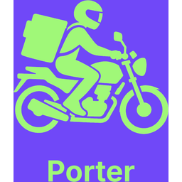
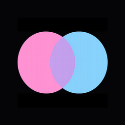
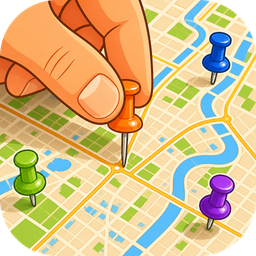
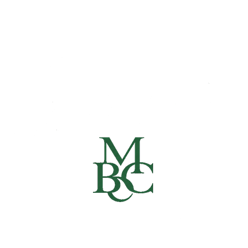

Listing #001
TheSacramentoFree
Give Freely. Ask Kindly.
Community-powered free gifting for Sacramento neighbors — plus live Go Get pickup in the Android app. No selling, no bidding, no flipping. 100% free, no ads, ever.
● Active · Free

Loading listings…
MBC v1.5.13
Free apps & sites to try — security has its own page
This is the list — the classifieds of projects under the Markk Brandon Collective. Open View details for screenshots and the full rundown, or jump straight to a live site. Most of these are free to use on purpose (spite for paywalls, or just boredom builds I still want people using). Guardr, Signature Security Specialist, and the BSIS certificates live on the Security Showcase — different lane, different goal. Not mixed into this free-app list.
Why this exists
Sacramento is home. I watched good stuff hit the curb while neighbors needed the same things — and every “free” app still wanted a cut somewhere. So I built something that stays free: give, ask, no selling, no flipping, no ads. The Android app adds live Go Get pickup. The same buy-nothing lane extends to other cities when neighbors ask for it.
Listing #001
Give Freely. Ask Kindly.
Community-powered free gifting for Sacramento neighbors — plus live Go Get pickup in the Android app. No selling, no bidding, no flipping. 100% free, no ads, ever.
● Active · Free
Listing #009
Give Freely. Ask Kindly.
Community buy-nothing board for Buffalo — the same free gifting lane as TheSacramentoFree, built for a different city.
● Active · Free
Why this exists
StrainVerse, SpiritsVerse, Cookverse, GigOS, and the smaller builds here weren't born from a pitch deck. Culture stuff I wanted to play with — cannabis, drinks, cooking, live shows, games, delivery — turned into real apps with real backends, not throwaway demos. Still free to use where that applies. Still meant to get used.
Listing #002
Stoner-First Social Network
Cannabis-centered social platform with strain directory, HerbHub, SocialSesh chats, MatchIt, and community feeds.
● Active · Free
Listing #003
Social Network for Drink Lovers
Cocktails, beer, spirits, wine. Drink Directory, SipStream, Local Pub map, BarSesh groups, digital bar.
● Active · Free
Listing #004
The Social Table
Social cooking with Chef Gemini AI — pairings, substitutions, techniques, kitchen experiments. Part of the Verse family.
● Active · Free
Listing #005
The operating system for live performance
Organize your band, build reusable sets, plan gigs, and keep everyone aligned from rehearsal to showtime. GigOS Bands keeps songs, sets, gigs, and performance notes in one clear system.
● Active · Free
Listing #010
Brandr
Brandr — shipped app from The Markk Brandon Collective. Source and release notes live on GitHub.
● Active · Free
Listing #011
CheckDeck
CheckDeck — shipped app from The Markk Brandon Collective. Source and release notes live on GitHub.
● Active · Free
Listing #012

Pick Your Place. Run Your Time.
Portr is the coverage-driven delivery marketplace — Portr customer app, Portr Runner, Portr Vendor, and Portr Command ops. Monorepo source lives in FoodDelivery on GitHub; product home is portr.com.
● Active
Listing #013

FREQ
FREQ — shipped app from The Markk Brandon Collective. Source and release notes live on GitHub.
● Active · Free
Listing #014
Group domino scorekeeping
Domino Score (GroupDominoScore) — group scorekeeping app from The Markk Brandon Collective. Source on GitHub.
● Active · Free
Listing #015
HangMan
HangMan — word game app from The Markk Brandon Collective. Source and release notes live on GitHub.
● Active · Free
Listing #018
Collective portfolio hub
TheMarkkade — portfolio and project hub from TheMarkkBradonCollective/TheMarkkade.io. Public site on Vercel; the newspaper front page now lives on GitHub Pages.
● Active
Guardr, Signature Security Specialist, and the BSIS certificates moved to their own desk — the Security Showcase. Not mixed into these free classifieds.
Open Security Showcase
Social & Connection
Spite for paywalled appsWhy this exists
A lot of social apps weren't built for you — they were built for advertisers. Bots, fake profiles, data sold off, paywalls for basics. Friendr, Chatr, Findr, MeUs-Them, and MyVenue are my answer: consent first, free to use where possible, real databases, human moderation where it matters. Check them out. If they help, help keep them online.
Listing #006

Friendr
Consent-First Social Connection
Free, ad-free social app with three opt-in layers: Friends, A Bit More, and Way More. 18+ ID-verified, human moderation, no data sold.
● Active · Free
Listing #008

Findr
Location sharing for your people
Share live location with the people you trust — account on the web, map sharing from the Findr app.
● Active · Free
Listing #007
Chatr
Secure Private Chat
Your private bulletin board — pin encrypted sticky notes to anyone with a code. Works offline and syncs when you're back.
● Active · Free
Listing #016
MeUs-Them
MeUs-Them
MeUs-Them — shipped social app from The Markk Brandon Collective. Try the live site or open the repo on GitHub.
● Active · Free
Listing #017

MyVenue
MyVenue
MyVenue — shipped app from The Markk Brandon Collective. Live site on Vercel; source on GitHub.
● Active · Free